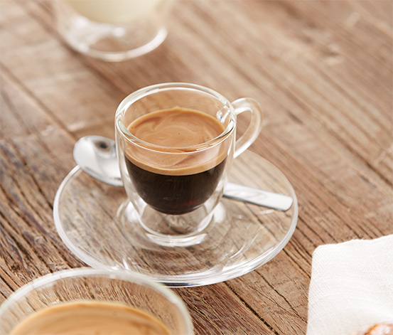
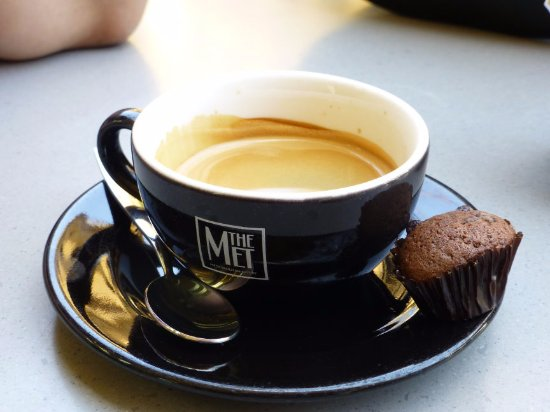
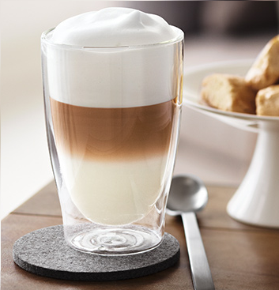
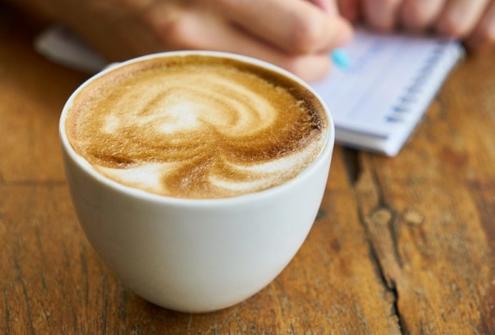
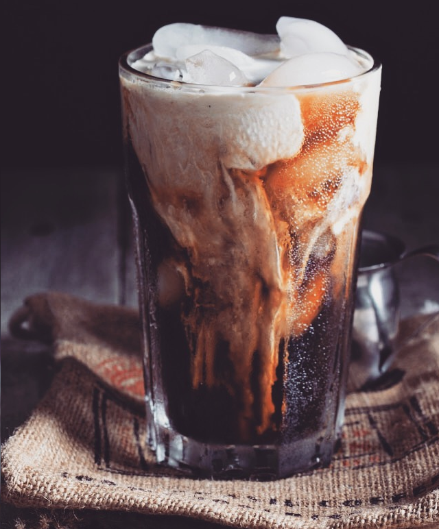
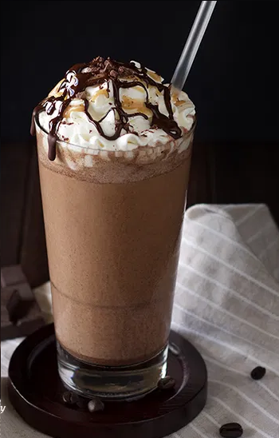

|  |
EspressoDost canlısı ve uyumlu. Kahvenin tadını gerçekten seviyorsunuz.Nadir ve güzel bir özellik. |
Double EspressoPratik ve çalışkansınız. Tek shot Espresso artık işe yaramıyor, biliyorsunuz. |
 |
|  |
LatteDüşünceli fakat çoğunlukla kararsızsınız. Latte, bilinmezlikler arasında, güvenli bir tercih. |
MochaEğlenceyi seviyorsunuz ve üretkensiniz. Kahve tadından hoşlanmıyorsunuz, ama gözlerinizi açacak bir şey arıyor, doğaçlama yaparak bunu buluyorsunuz. |
 |
 |
CappuccinoYufka yüreklisiniz ama zaman zaman unutkan oluyorsunuz. Dudağınızdaki köpüğü silmek için arkadaşlarınızın uyarısını bekliyorsunuz. |
AmericanoSakin ve çalışkansınız. Basit şeylerden mutlu oluyorsunuz. Parklarda bir piknik, cıvıldayan kuşlar ve sulandırılmış bir kahve. |
 |
|  |
Buzlu Kahveİddalı ve dobrasınız. Mevsimlere göre yaşayacak değilsiniz. Ayrıca pipetle içmek de hoşunuza gidiyor. |
FrappuccinoMutlu ve enerjiksiniz. Kahveyi sevdiğinizi savunuyorsunuz, ama aslında dondurmayı seviyorsunuz. |
 |